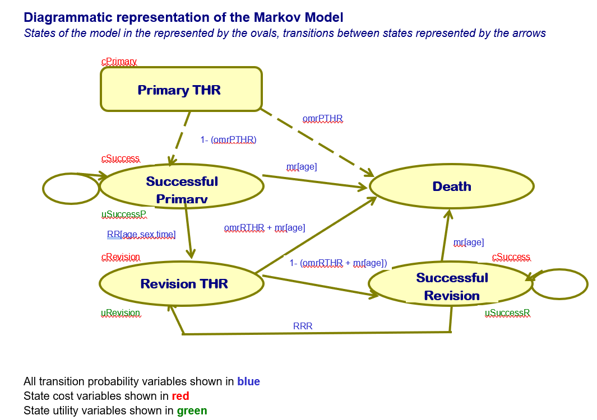

male <- 0 #0 for female, 1 for male
age <- 60 #average age at receipt for primary implant
#transition probabilities
#these values are provided at the start of the guide on in section 3.5.2
omrPTHR <- 0.02 #operative mortality rate for primary THR
omrRTHR <- 0.02 #operative mortality rate for revision THR
rrr <- 0.04 #re-revision risk rate
#costs
cRevision <- 5294 #cost of revisions
cStandard <- 394 #cost of standard implant
cNP1 <- 579 #cost of new implant
#discount rates
cDR <- 0.06 #cost discount
oDR <- 0.015 #outcome discount
#utility of markov states
#these values are given in Section 3.5.2 1) iii
uSuccessP <- 0.85 #utility of primary success
uSuccessR <- 0.75 #utility of revision success
uRevision <- 0.30 #utility of revision2 Exercise 3.5
This R markdown file reproduces exercise 3.5 in R from the book “Decision Modelling for Health Economic Evaluation” by Andrew Briggs, Mark Sculpher, and Karl Claxton
This exercise builds upon the skills from exercise 2.5. You will need to know how to build and call functions in R, as well as how to multiply matrices.
The following Markov Model will be used in this exercise. Use it to fill in the transition probabilities in the later section. This figure comes directly from the original Excel worksheet provided by Andrew Briggs, Mark Sculpher, and Karl Claxton.

2.1 Setup
To begin, we need to enter our parameter values. Some are are provided directly and some need to be calculated.
Below we enter the cost and utility parameters provided.
Now we will enter the survival model that is fit with a weibull distribution.
Remember that the coefficients are on the log scale.
survModelSummary <- data.frame(
variable = c("lngamma","cons","age","male","NP1"),
coefficient = c(0.3740968,-5.490935,-0.0367022,0.768536,-1.344474),
SE = c(0.0474501,0.207892,0.0052112,0.109066,0.3825815)
)We can exponentiate the coefficients to get the hazards.
survModelSummary$hazard_ratio <- exp(survModelSummary$coefficient)To calculate lambda of the weibull distribution we can take the linear combination of the coefficients. Again, we need to remember to exponentiate the results as they are on the log scale.
We can use the $ operator to create new columns in the survModelSummary dataframe and extract any column from the dataframe by name. the $ operator by default extracts a vector, which means vector operations can be done on them such as [i] to extract the ith element of the vector. If you want to refresh your memory on how to use [i] to extract a data element, review exercise 2.5.
#replace `columnname`
survModelSummary$exp_coefficients <- exp(survModelSummary$coefficient)
#use the $ operator to extract the column of choice then use [i] to extract the coeficient of choice
#for example [2] corresponds to the constant coefficient
lnLambda <- survModelSummary$coefficient[2] + survModelSummary$coefficient[3]*age + survModelSummary$coefficient[4]*male
#ensure to exponentiation lambda and gamma as they are in in the log scale
lambda <- exp(lnLambda)
gamma <- exp(survModelSummary$coefficient[1])2.2 Step 1: Calculate the transition probabilities
Lets create a function to calculate the transition probabilities for a yearly cycle t. The formula is given in Section 3.5.2 Section 2 iii).
As we noted above, R is vectorized. That means we can input a vector as an argument and each element of the vector will be passed through.
We want all of t = 1,…,60 to be calculated so we can simply use 1:t which creates a vector 1,…,t
We can use this function to calculate the revision risk or the time-dependent transition probability per year.
revisionRisk <- tProbsHazard(60,lambda = lambda,gamma = gamma)2.3 Step 2: Using life-tables for background mortality
We want to make sure we are accounting for background mortality in our model. First, we will add the death rates and yearly transition probabilities provided in the exercise.
#provided death rates and yearly transition probabilities
deathRates <- data.frame(
Age = c("35-44","45-54","55-64","65-74","75-84","85 and over"),
Males = c(1.51,3.93,10.9,31.6,80.1,187.9),
Females = c(0.99,2.6,6.7,19.3,53.5,154.8)
)
yearlyTProbs <- data.frame(
Age = c("35-44","45-54","55-64","65-74","75-84","85 and over"),
Index = c(35,45,55,65,75,85),
Males = c(0.00151,0.00393,0.0109,0.0316,0.0801,0.1879),
Females = c(0.00099,0.0026,0.0067,0.0193,0.0535,0.1548)
)Note that by default this exercise uses female. Lets create the death risk by analyzing the cycle for those who are female and have an average age of 60 plus the cycle year due to all cause mortality
To do this we will us use a special function in R called the apply family. This function takes two arguments x and a function of x. This function is then applied to all elements of x. We can use this to extract the appropriate cell of the yearlyTProbs dataset for all 60 cycles. The apply function family is essentially a wrapper of a for-loop, that can be quickly written. If you prefer the equivalent code, it can be written as a for-loop.
Here we are using the sum function on a “logical if”. For example we are on cycle 5 then the average patient age is now 5+60 which is 65, then there are 4 rows (which all show up as true or false values) that are less than or equal to 65, taking the sum gives us an index of 4 which is the appropriate index to select.
deathRisk <- sapply(1:60,function(x){
#calculate which index select based on the age group
inds <- sum(x+age >= yearlyTProbs$Index)
#select the gender columns
#if else takes 3 arguments, the first is a logic check, if true, it returns the second value,
#if false it returns the 3rd argument. Equivalent code can be written use if(x){}else{}.
genderCol <- ifelse(male ==1,3,4)
return(yearlyTProbs[inds,genderCol])
})2.4 Step 3: Creating the Markov Model
To create the Markov Model, we must specify a transition matrix as in Exercise 2.5 and then calculate the number of individuals in each state for 60 cycles. The change here from Exercise 2.5 is that the transition probabilities change depending on the cycle.
Let’s use the Figure shown at the beginning of the file. Let the first column be PrimaryTHR, the second column be Success of primary THR (SuccessP), the third column be Revision THR, the fourth column be Success of Revision (SuccessR), and the fifth column be Death. Thus we have a 5 state Markov model.
# The matrix will follow this structure, shown in Figure 3.7:
#
# To State
# PrimaryTHR SuccessP RevisionTHR SuccessR Death
# From PrimaryTHR
# State SuccessP
# RevisionTHR
# SuccessR
# DeathNote that our transition matrix is now time-dependent. That is, depending on the cycle, the transition probability will change. Therefore we must make a function that alters the transition matrix based on the cycle. We will fill in the transition matrix function with the appropriate transition probabilities. To get the t’th value of vector such as mr, we can use the [t] operator.
tProbs_time <- function(omrPTHR,omrRTHR,rr,mr,rrr,t){
#rr is revision risk, mr is mortality risk
tProbs <- matrix(
c(0, 1-(omrPTHR), 0, 0, omrPTHR,
0, 1-(rr[t]+mr[t]), rr[t], 0, mr[t],
0, 0, 0, 1-(omrRTHR + mr[t]), omrRTHR + mr[t],
0, 0, rrr, 1-(rrr+mr[t]), mr[t],
0, 0, 0, 0, 1
),ncol = 5, nrow = 5, byrow = T
)
}Check. Manually check that each row sums to 1 by performing some algebra.
We must now calculate the amount of individuals in each state for 60 cycles. We will re-use the function created in exercise 2.5 but modify it slightly for the new Markov model so that it includes the extra states and the time-dependent transition probabilities.
calculateYearlyProbs <- function(iVec,omrPTHR,omrRTHR,rr,mr,rrr,t){
#create empty matrix that we will fill in
matReturn <- matrix(nrow = t, ncol = 5)
#initialize first vector of proportions
#create column names
colnames(matReturn) <- c("PrimaryTHR","SuccessP","RevisionTHR","SucessR","Death")
for(i in 1:t){
#get the corresponding transition matrix based on the time
tProbs <- tProbs_time(omrPTHR,omrRTHR,rr,mr,rrr,i)
matReturn[i,] <- iVec %*% tProbs #round because we are using full population units
#update ivec
iVec <- iVec %*% tProbs
}
return(matReturn)
#returns a t (years) x 5 (states) matrix where the rows represent the proportion in a given state at year t
}Just like in 2.5, we will create our initial vector. Again, everyone in the population starts in the PrimaryTHR state.
iVec <- c(1000,0,0,0,0)Then we will calculate all states for all 60 cycles
populationStates <- calculateYearlyProbs(iVec = iVec,omrPTHR,omrRTHR,rr= revisionRisk, mr = deathRisk,rrr=rrr,t=60)Check. We will use rowSums to make sure that all rows total to 1000
rowSums(populationStates) [1] 1000 1000 1000 1000 1000 1000 1000 1000 1000 1000 1000 1000 1000 1000 1000
[16] 1000 1000 1000 1000 1000 1000 1000 1000 1000 1000 1000 1000 1000 1000 1000
[31] 1000 1000 1000 1000 1000 1000 1000 1000 1000 1000 1000 1000 1000 1000 1000
[46] 1000 1000 1000 1000 1000 1000 1000 1000 1000 1000 1000 1000 1000 1000 10002.5 Step 4: Adapt the Model for a New Prosthesis
To adapt the model for a new prosthesis, we will re-use the previous results while adding the treatment effect.
The new revision risk adjusts the lambda value by a scalar – the hazard ratio of NP1
#use the $ operator to extract the appropriate hazard ratio
rrNP1 <- survModelSummary$hazard_ratio[5]
revisionRiskNP1 <- tProbsHazard(t=60,lambda = lambda*rrNP1,gamma = gamma)We will calculate the updated states using the calculateYearlyProbs function we created earlier and filling in the appropriate arguments
populationStatesNP1 <- calculateYearlyProbs(iVec,omrPTHR,omrRTHR,rr=revisionRiskNP1,mr=deathRisk,rrr,t=60)Check. We will check that the row sums are equal to 1000
rowSums(populationStatesNP1) [1] 1000 1000 1000 1000 1000 1000 1000 1000 1000 1000 1000 1000 1000 1000 1000
[16] 1000 1000 1000 1000 1000 1000 1000 1000 1000 1000 1000 1000 1000 1000 1000
[31] 1000 1000 1000 1000 1000 1000 1000 1000 1000 1000 1000 1000 1000 1000 1000
[46] 1000 1000 1000 1000 1000 1000 1000 1000 1000 1000 1000 1000 1000 1000 10002.6 Step 5: Caculate the Costs
We need to calculate the costs for both the standard and new prosthesis models. To do this, we will use the discount formula from exercise 2.5
#this formula comes directly from the previous exercise
discountFormula <- function(nonDiscount,discRate,t){
return(nonDiscount/(1+discRate)^(1:t))
}2.6.1 We will go through the steps for the standard treatment first
We will calculate Life-Years using rowSums, being sure to exclude the last state of death by using the [,-i] operator
lifeYearsStandard <-rowSums(populationStates[,-5])Next, we create the cost vector. The length of the vector should only then be 4, the total of the states with costs in the model.(Death can have costs that you might want to integrate in other models. But in this model, there are no costs associated with death.)
costs<- c(0,0,cRevision,0)We need to add a parameter for the initial cost. Note that we started with 1000 patients.
iCostStandard <- cStandard*1000We will calculate the total cost by using matrix multiplication to multiple our cost vector costs by our states matrix populationStates. We will use discountFormula to account for discounting over time.
totalCosts <- populationStates[,-5] %*% costs
#update the costs to account for discounting over time
discCostStandard <- discountFormula(totalCosts,cDR,t = 60)Next we need to repeat the previous steps for utility of the treatment over time. Just like for costs, we start by creating a utility vector for all states except death which has a utility = 0
utility<- c(0,uSuccessP,uRevision,uSuccessR)We will calculate the total utility over time using matrix multiplication and then we will calculate the discounted utility.
totalQuality <- populationStates[,-5] %*% utility
QALYStandard <- discountFormula(totalQuality,discRate = oDR,t = 60)Lastly, we will calculate the total cost and utilities for all cycles/person, ensure to include the initial cost of the treatment
2.6.2 Repeat for the new prosthesis (NP1)
All steps should be the same for the new prosthesis, with updated costs and utilities
#use rowsums to get the total life years
lifeYearsNP1 <- rowSums(populationStatesNP1[,-5])
#total and discounted costs
totalCostsNP1 <- populationStatesNP1[,-5] %*% costs
discCostsNP1 <- discountFormula(totalCostsNP1,cDR,t = 60)
#add the initial cost for NP1 via cNP1
iCostNP1 <- cNP1*1000
#Utility
totalQualityNP1 <- populationStatesNP1[,-5] %*% utility
QALYNP1 <- discountFormula(totalQualityNP1,discRate = oDR,t = 60)
#calculate the total cost for all cycles/person, ensure to add the initial cost of the new implant
NP1cost <- sum(c(iCostNP1,discCostsNP1))/1000
NP1LYs <- sum(lifeYearsNP1)/1000
NP1QALYS <- sum(QALYNP1)/10002.7 Step 6: Calculate the ICER
The final step is to calculate the ICER for the new prosthesis compared to standard care
#calculate the difference in costs
diffCost <- NP1cost-STDcost
#difference in QALYs
diffQALY <- NP1QALYS-STDQALYS
#calculate the ICER
ICER <- diffCost/diffQALY
ICER [1] 2198.487